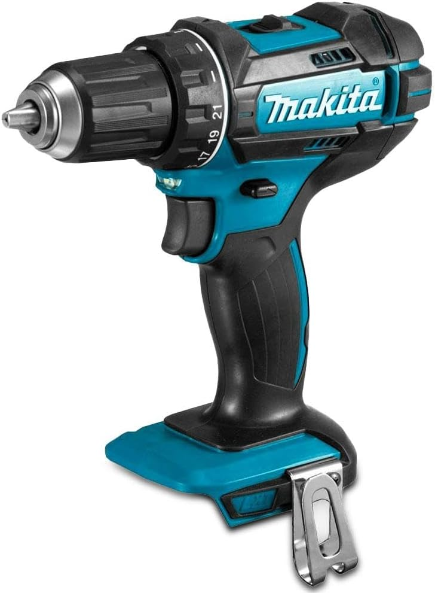

01
Makita LXT
Makita DHP482Z
Percutor 18 V con 62 Nm para quien ya utiliza baterías Makita LXT.
62 Nm
Par máximo
18 V
Sistema LXT
2
Velocidades
Sí
Percusión
Es una opción especialmente lógica para quien ya dispone de baterías Makita LXT. La versión DHP482Z se vende como cuerpo de máquina, por lo que batería y cargador deben adquirirse aparte si todavía no perteneces al ecosistema.
Puntos a favor
- 62 Nm de par.
- 21 ajustes de embrague.
- Percusión y dos velocidades.
- Amplio ecosistema Makita LXT.
A tener en cuenta
- La versión Z no incluye batería.
- No utiliza motor brushless.